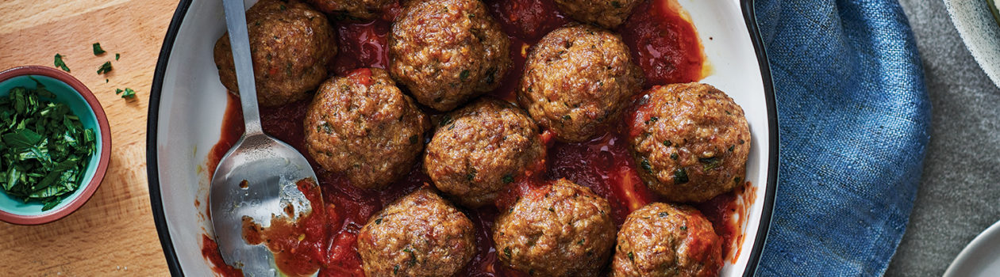

Boulettes de Viande

Ingrédients
- 2 lb (1 kg) de mélange de viandes hachées (bœuf, porc et veau haché maigre en parts égales)
- 2 œufs
- 1 tasse (250 mL) de lait
- 2/3 tasse (150 mL) de chapelure fraîche ou sèche
- 1/2 tasse (125 mL) de parmesan râpé
- 1/2 tasse (125 mL) de persil frais, finement haché
- 1/4 tasse (60 mL) d’oignon râpé
- 2 gousses d’ail, hachées finement
- 1 c. à thé (5 mL) de sel et de poivre
- Une pincée de muscade moulue
- 2 c. à soupe (30 mL) d’huile d’olive
Directions
- Préchauffer le four à 200°C (400°F). Tapisser une plaque de cuisson de papier parchemin.
Dans un grand bol, mélanger la viande hachée, les œufs, le lait, la chapelure, le parmesan,
le persil, les oignons, l’ail, le sel, le poivre et la muscade à l’aide des mains.
Recouvrir et réfrigérer pendant environ 10 minutes pour que le mélange se raffermisse.
- Remplir une mesure de 75 ml (1/3 tasse) de mélange de viande, jusqu’au bord.
Démouler et rouler en boule. Faire 16 boulettes de viande.
- Dans une grande poêle antiadhésive, chauffer l’huile d’olive à feu moyen.
Faire cuire quelques boulettes à la fois jusqu’à ce qu’elles soient entièrement brunes (3 à 5 minutes).
Transférer sur une plaque de cuisson préparée. Cuire pendant 15 à 18 min jusqu’à ce que la viande soit cuite
et que la température interne atteigne 165°F (74°C).
Pour la Sauce
Ingrédients
- 3 gousses d’ail, hachées
- 1 feuille de laurier
- 1 ml (1/4 c. à thé) de flocons de piment broyés
- 30 ml (2 c. à soupe) d’huile d’olive
- 1 boîte de 796 ml (28 oz) de tomates italiennes entières
Directions
Dans une grande poêle antiadhésive à feu moyen-élevé, dorer légèrement l’ail avec le laurier et le piment dans l’huile. Ajouter les tomates et laisser mijoter à feu doux 30 minutes ou jusqu’à ce qu’elles commencent à éclater. À l’aide d’un pilon à pommes de terre, écraser les tomates grossièrement. Saler et poivrer. Réserver au chaud.
Astuce
Pour que les boulettes restent chaudes, mettre une fine couche de sauce tomate dans une mijoteuse avant d’y ajouter les boulettes de viande.
Couvrir et mettre à l’intensité de MAINTIEN AU CHAUD pour une entrée parfaite.
Remplacez par de la dinde, du poulet ou de l’agneau haché.
Home